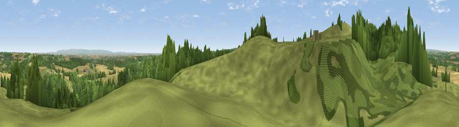

Viewpoint near Grewelthorpe
#10047 in England · top 16% of its area beats it · near Grewelthorpe · path 131 mWhere it is
The exact computed spot (SE 23175 77375). Click the marker for map links.
Public access: the nearest public right of way is about 131 m away — the final stretch may cross private land. Computed from Natural England's CRoW access layer and OpenStreetMap rights of way — not the legal definitive map. Always verify locally.
The view, rendered

A 360° render of this exact spot computed from the terrain model, tree cover and land cover — summer colours, afternoon light, calibrated against photographs of famous viewpoints. Real trees, hedges and buildings will differ in detail.
The panorama
Grey silhouette: terrain skyline in each direction (720 bearings, Earth curvature and refraction included). Dashed green: skyline with trees (+15 m) and buildings (+8 m) as obstacles. Blue strip: how far the ground is visible on each bearing.
Where the view opens
Wedge length = distance to the farthest visible ground on that bearing (vegetation-aware). Rings at 10, 25 and 50 km.
What fills the view
62% woodland · 26% grassland · 11% cropland
Angular shares of the visible panorama (visual magnitude), not map area. Landscape diversity 0.40 (0–1 Shannon).
Key numbers
More beautiful places nearby
The staircase of upgrades: each row has a higher view potential than everything closer. Driving times are estimates from straight-line distance, calibrated against real road routing — check an actual route before setting out.
| Place | Direction | Drive | Score |
|---|---|---|---|
| Viewpoint near Grewelthorpe | W · 1 km | ~2 min | 73.9 |
| Viewpoint near East Witton | NW · 12 km | ~22 min | 77.8 |
| Viewpoint near Kirby Knowle | ENE · 24 km | ~40 min | 80.5 |
| Viewpoint near Thirlby | ENE · 28 km | ~45 min | 81.2 |
| Viewpoint near Thirlby | ENE · 28 km | ~45 min | 81.5 |
| Beacon Hill | NE · 32 km | ~49 min | 84.7 |
| Carlton Bank | NE · 38 km | ~57 min | 85.1 |
| Roseberry Topping | NE · 49 km | ~70 min | 85.8 |
54.19162, -1.64632 · source: screening · position refined by local search. Computed location — check access rights before visiting.